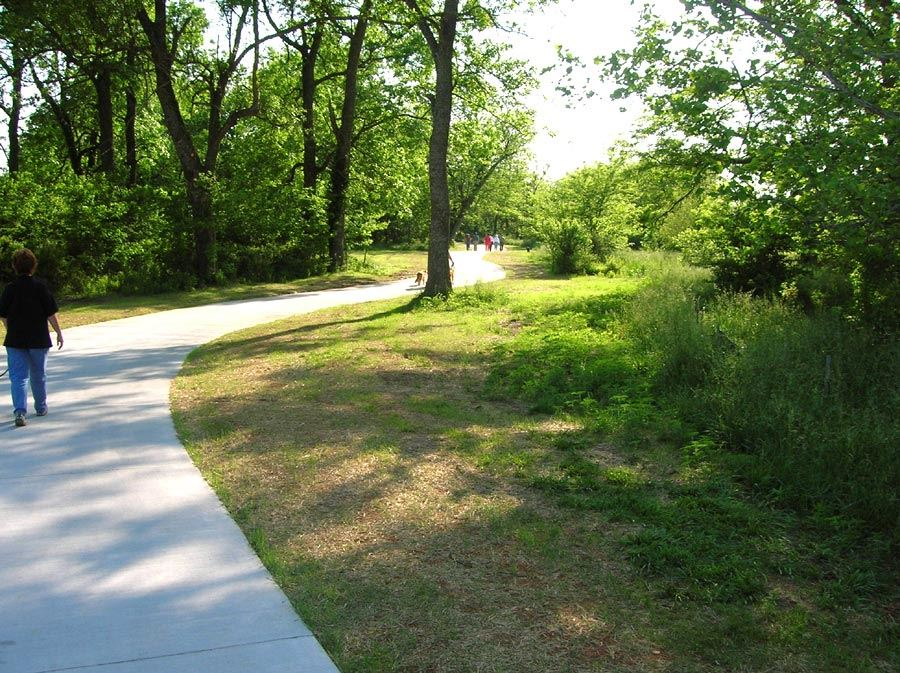

Hobbies & Interest
- Learning Certifications:
Planning to pursue on learning the CompTIA Security+ certification during the semester in order to better solidify my knowledge in cybersecurity.

- Tech News: Keeps up with technology news and financial market developments related to tech companies.
- Technology Exploration: Explores new IT tools or platforms, and experiments with software and system features to better understand how technology is improving.

- Watching Sports: Enjoys watching professional sports such as the NFL, NBA, and Soccer.
- Walking & Outdoor Trails: Enjoys walking on outdoor trails as a way to stay active, clear the mind, and enjoy the weather.
